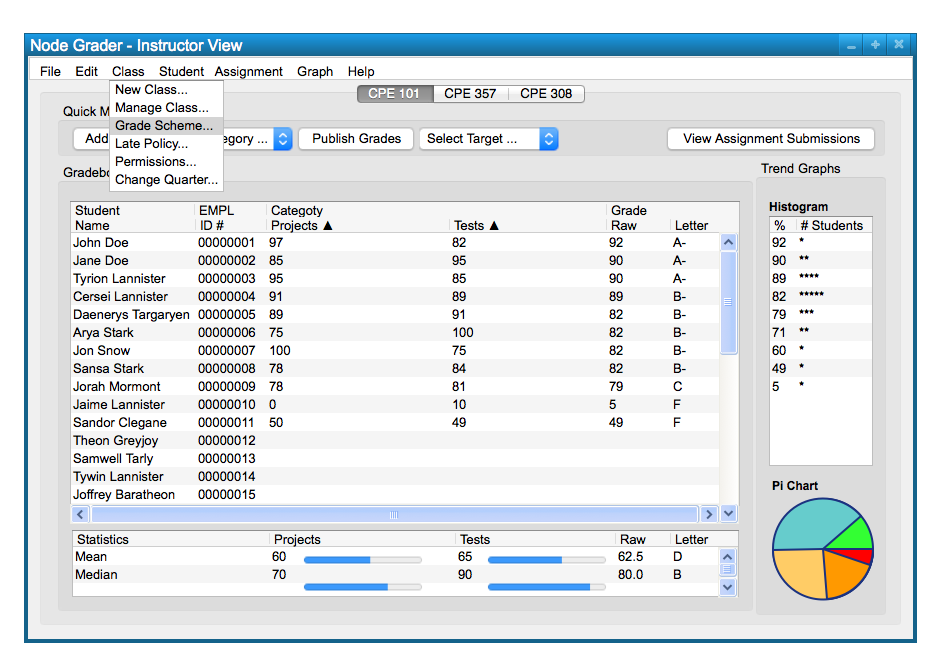

To change the grade schema in the program, click the 'Grading' option on the toolbar, and then click 'Grade Schema'. This is illustrated in Figure 1.
This is shown below, in Figure 1.

Figure 1
A pop up dialog will appear that will let the user change the grading schema. There will be the option to give 'pass/fail' or a graded scale with letter grades.